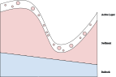
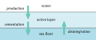
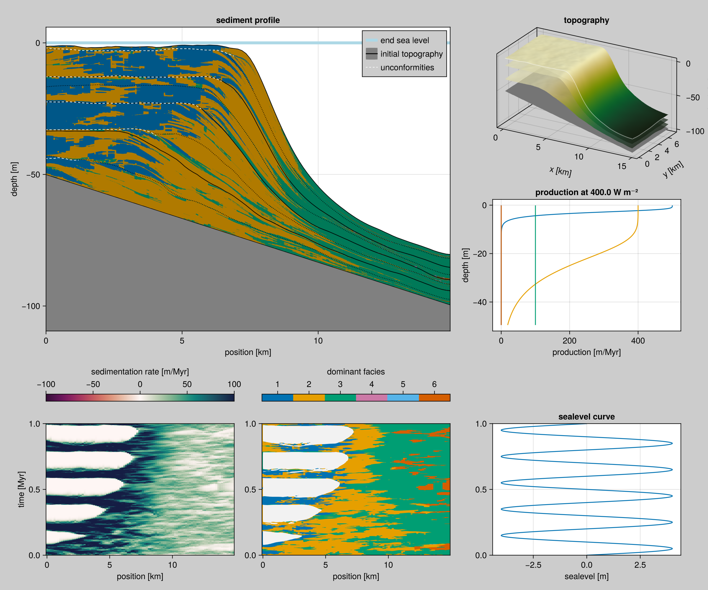
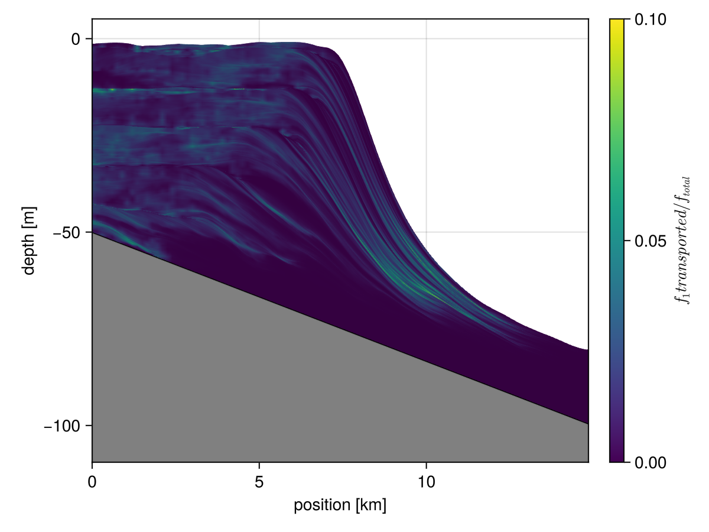
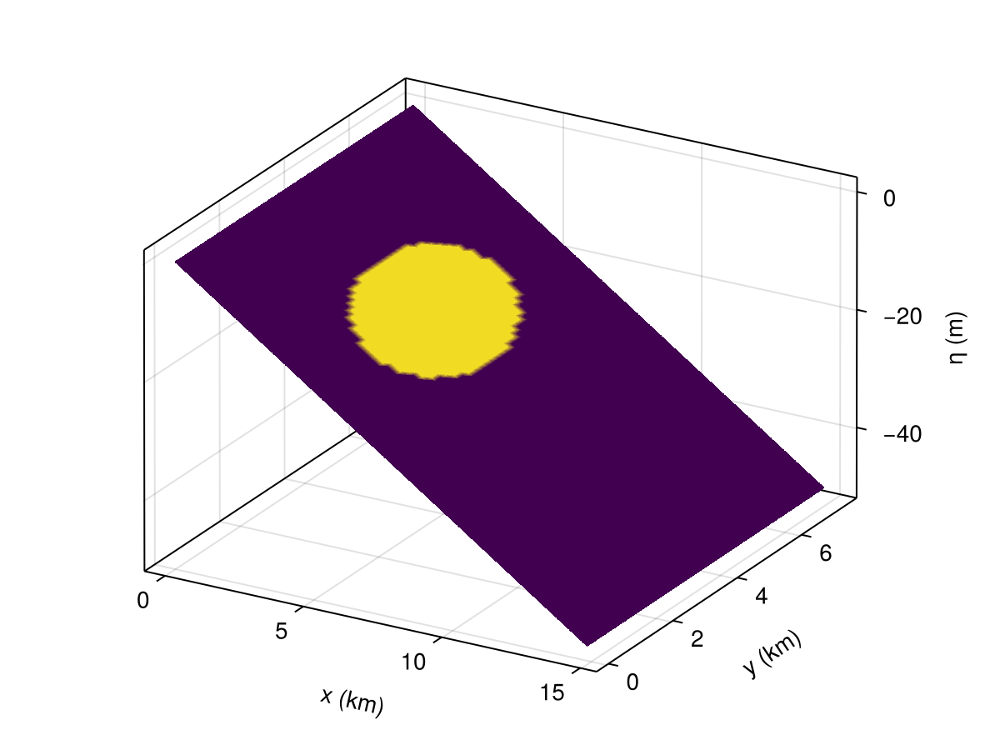
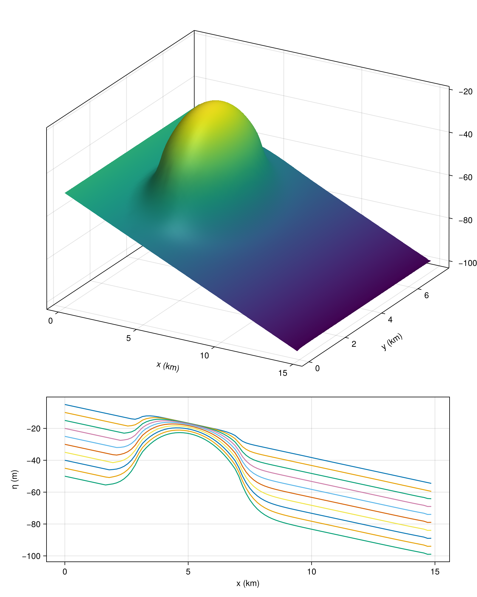
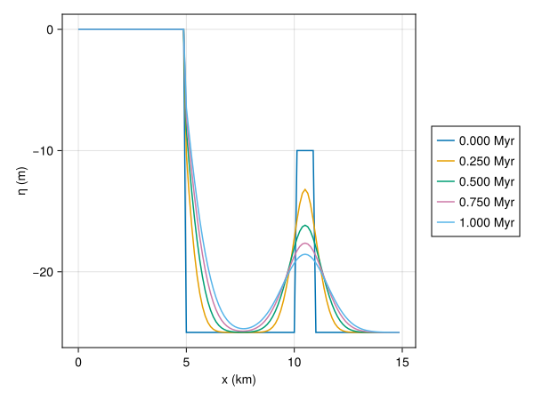
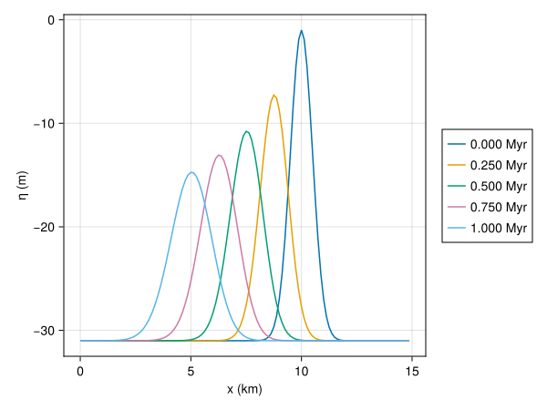
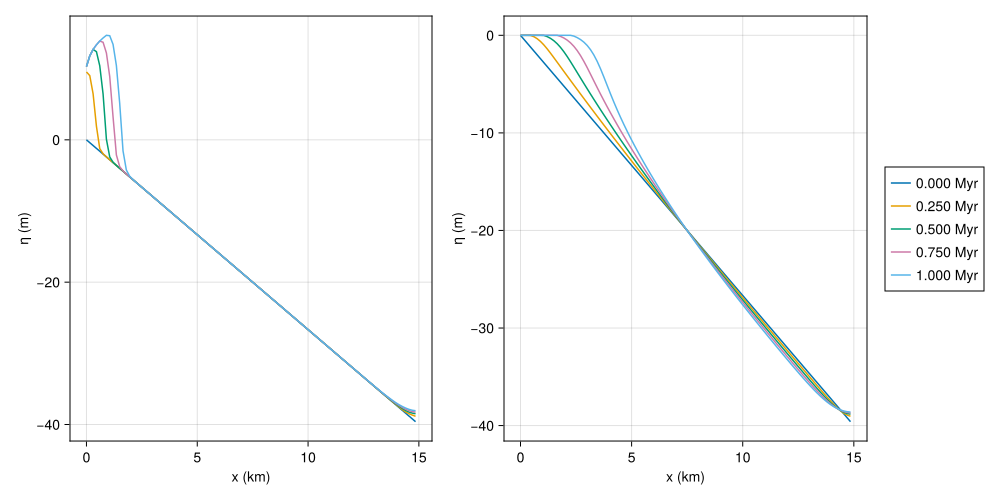
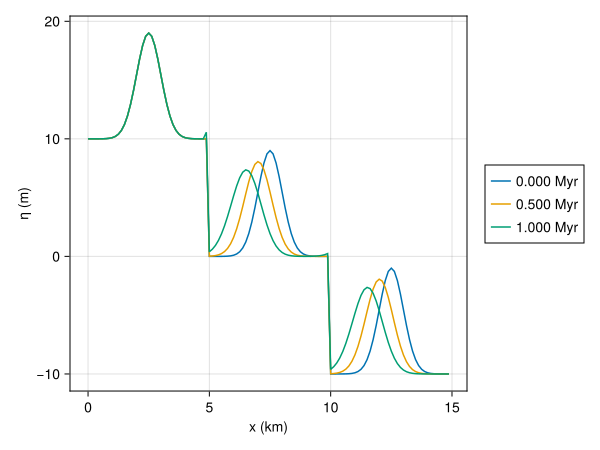

Active Layer Transport
The following is inspired on well-known active layer approaches in river bed sediment transport [5] [6] [1]. All quantities with subscript $f$ are facies dependent. Sediment is measured in meters of deposited material. $P_f$ is the production of sediment per facies in $m/s$. Further unit calculations would be more readable if we consider the unit of sediment as separate, so for instance it doesn't cancel against $m^2$ in the units of sediment flux. In the implementation, $\nu$ has the units of ${\rm m}$ which is totaly weird. TBC
In a model without transport, we could write
\[\sigma + \sum_f {{\partial \eta_f} \over {\partial t}} = \sum_f P_f,\]
where $\sigma$ is the subsidence rate in $m/s$, $\eta_f$ is elevation of the sediment surface relative to a fixed level (as defined by [5]). We consider the mass balance for each facies separately.
We suppose that loose sediment, either fresh production or disintegrated older sediment, is being transported in a layer on top of the sea bed. The flux in this layer is assumed to be directly proportional to the local slope of the sea bed $| \nabla_x \eta_* |$, where $\eta_* = \sum_f \eta_f$, the sum over all facies contributions, including $\eta_0$, the initial bedrock elevation.

The active layer now contains a concentration $C_f$ particles of different grain size (for each facies $f$). If needed, $C_f = \alpha_f P_f$ where $\alpha_f$ is some facies parameter determining the fraction of production that is available for transport. The sediment flux is given as,
\[{\bf q_f} = -\nu_f C_f {\bf \nabla_x} \eta_*.\]
The following is the mass balance:
\[\sigma + {{\partial \eta_*} \over {\partial t}} = -\sum_f {\bf \nabla_x} \cdot {\bf q_f} + \sum_f P_f,\]
In our modelling we keep track of individual contributions per facies over time [2].
Combining these equations, and ignoring subsidence for the moment (which is a global effect and can't be expressed on a per-facies basis), we get a component-wise diffusion equation
\[{{\partial \eta_f(x)}\over{\partial t}} = {\bf \nabla_x} \cdot \big[ \nu_f \alpha_f\ P_f(x)\ {\bf \nabla_x} \eta_{*}(x) \big] + P_f(x),\]
In our model we need to solve this equation one time-step each iteration. If we solve this using forward methods, we should be reminded of the CFL limit for diffusion equations (depending on the diffusion constants and grid size we shouldn't pick the time steps too large). Alternatively, for these two-dimensional situations, an implicit approach is feasible. Also we should take care that somehow $\nabla(\nu\alpha P \nabla \eta) + P > 0$. The interpretation being that we can't transport more than we produce, even if there is capacity to do so.
To solve this equation, it is nicer to expand the transport-diffusion term using the product rule, in short notation:
\[\partial_t \eta_f = \nu' \nabla P_f(x) \cdot \nabla \eta(x) + \nu' P_f(x) \nabla^2 \eta(x) + P_f(x),\]
where $\nu' = \nu_f \alpha_f$
So we have a advection component with velocity $\nu' \nabla P_f$ and a diffusion component with a coefficient $\nu' P_f$.
As part of the production $P_f$ we disintegrate older sediment at a fixed rate.

Transport parameters
Disintegration transfer
disintegration_transfer is a function that determines how the disintegrated material from each facies is allocated to the facies in the active layer.
Default behavior
By default (ActiveLayer.jl), disintegration_transfer is the identity function x -> x, i.e. disintegrated sediment is added back to the same facies it came from.
Usage examples
For three autochthonous (produced in situ) facies and their transported equivalents, one may define:
disintegration_transfer = f -> stack((0.0.*f[1,:,:], 0.0.*f[2,:,:], 0.0.*f[3,:,:],
f[1,:,:].+f[4,:,:], f[2,:,:].+f[5,:,:], f[3,:,:].+f[6,:,:]), dims=1)The transfer function takes the array of produced sediment p for all facies across the whole grid, sets facies 1-3 to zero and moves all the transported material into the "transported" facies (4-6).
The function should be defined as shown above so that it returns the adjusted production for each facies across the domain in a tuple, which is then reshaped to match the dimensions of the input array f using stack.
Transporting only 50% of disintegrated material into "transported" facies would look like this:
disintegration_transfer = f -> stack((0.5.*f[1,:,:], 0.5.*f[2,:,:], 0.5.*f[3,:,:],
0.5.*f[1,:,:].+f[4,:,:], 0.5.*f[2,:,:].+f[5,:,:], 0.5.*f[3,:,:].+f[6,:,:]), dims=1)for the same number (3) of initial and transported facies. When defining a transfer function, you should make sure that it conserves mass i.e. all the disintegrated sediment must be reallocated to somewhere.
Tests
A simple unit test verifies that the sediment is redistributed across facies as expected:
module ActiveLayerSpec
using Test
using CarboKitten.Components: ActiveLayer as AL
using CarboKitten.Components.Common
using CarboKitten.Components.WaterDepth: initial_topography
@testset "Components/ActiveLayer" begin
@testset "Disintegration transfer" begin
let facies = fill(AL.Facies(), 4),
input = AL.Input(
box = Box{Periodic{2}}(grid_size=(10, 1), phys_scale=1.0u"m"),
time = TimeProperties(Δt=1.0u"kyr", steps=10),
facies=facies,
disintegration_transfer = f -> stack((0.0.*f[1,:,:], 0.5.*f[2,:,:],
f[1,:,:].+f[3,:,:], f[4,:,:].+0.5.*f[2,:,:]),dims=1),
)
bathymetry = initial_topography(input)
state = AL.State(
step = 0,
bathymetry = bathymetry,
sediment_thickness = zeros(Amount, input.box.grid_size...),
sediment_buffer = zeros(Float64, input.sediment_buffer_size, AL.n_facies(input), input.box.grid_size...),
active_layer=zeros(Amount, AL.n_facies(input), input.box.grid_size...))
d = ones(Amount, AL.n_facies(input), input.box.grid_size...)
dtf = input.disintegration_transfer
transferred_sed = dtf(d)
state.active_layer .+= transferred_sed
@test all(state.active_layer[1,:] .≈ 0.0u"m")
@test all(state.active_layer[2,:] .≈ 0.5u"m")
@test all(state.active_layer[3,:] .≈ 2.0u"m")
@test all(state.active_layer[4,:] .≈ 1.5u"m")
@test sum(state.active_layer[:,1,1]) ≈ sum(d[:,1,1])
@test all(size(transferred_sed) .== size(d))
end
end
end
endTransport coefficient
The transport coefficient used in CarboKitten is expressed in $\unit{m/Myr}$, because it is derived from the parameter $\nu_f$, transport velocity, that is expressed per unit slope. It is not the same as molecular-like diffusion coefficient, which have units $\unit{m^2/Myr}$. CarboKitten separates sediment lithification (cementation_time), disintegration (disintegration_rate) and transport on the slope. It also allows defining different wave velocity profiles by users. As a result, the transport coefficient differs from the diffusion coefficients reported in the literature. The effective diffusion coefficient of a given facies can be estimated for a given facies. In the example below, facies are assigned diffusivities that are relative to a minimum diffusivity, set to be 2.5 m/Myr, and the most mobile facies is assigned a quadruple of this value. Estimates of diffusion coefficients for these values have been obtained based on @hiddingcarbokittenjl2025.
| Transport coefficient $\unit{m/Myr}$ | Effective diffusion coefficient $\unit{m^2/Myr}$ | |
|---|---|---|
| Facies 1 | 10 | 326 668 |
| Facies 2 | 2.5 | 80 461 |
| Facies 3 | 5 | 15 6904 |
All other parameters held similar, transport coefficient values below 2.5 m/Myr will result in a largely immobile facies at the timescale of $10^6$ yr.
Example effect of transport coefficient
module Diffusivity_example
using Unitful
using CarboKitten
using CarboKitten.Export: read_slice, data_export, CSV
const PATH = "data/output"
const TAG = "diffusivity-example"
const min_diffusivity = 2.5u"m/yr"
const FACIES = [
ALCAP.Facies(
production = BenthicProduction(
maximum_growth_rate=500u"m/Myr",
extinction_coefficient=0.8u"m^-1",
saturation_intensity=60u"W/m^2"),
transport_coefficient=4*min_diffusivity,
name="euphotic"),
ALCAP.Facies(
production = BenthicProduction(
maximum_growth_rate=400u"m/Myr",
extinction_coefficient=0.1u"m^-1",
saturation_intensity=60u"W/m^2"),
transport_coefficient=min_diffusivity,
name="oligophotic"),
ALCAP.Facies(
production = BenthicProduction(
maximum_growth_rate=100u"m/Myr",
extinction_coefficient=0.005u"m^-1",
saturation_intensity=60u"W/m^2"),
transport_coefficient=2*min_diffusivity,
name="aphotic"),
ALCAP.Facies(
active=false,
transport_coefficient=10.0u"m/yr",
name="euphotic transported"),
ALCAP.Facies(
active=false,
transport_coefficient=1.0u"m/yr",
name="oligophotic transported"),
ALCAP.Facies(
active=false,
transport_coefficient=5.0u"m/yr",
name="aphotic transported")
]
const PERIOD = 0.2u"Myr"
const AMPLITUDE = 4.0u"m"
const INPUT = ALCAP.Input(
tag="$TAG",
box=Box{Coast}(grid_size=(100, 50), phys_scale=150.0u"m"),
time=TimeProperties(
Δt=0.0002u"Myr",
steps=5000),
output=Dict(
:topography => OutputSpec(slice=(:,:), write_interval=10),
:profile => OutputSpec(slice=(:, 25), write_interval=1)),
ca_interval=1,
initial_topography=(x, y) -> -x / 300.0,
sea_level=t -> AMPLITUDE * sin(2π * t / PERIOD),
subsidence_rate=50.0u"m/Myr",
cementation_time = 5000u"yr",
disintegration_rate=5.0u"m/Myr",
disintegration_transfer = f -> stack((0.0.*f[1,:,:], 0.0.*f[2,:,:], 0.0.*f[3,:,:],
f[1,:,:].+f[4,:,:], f[2,:,:].+f[5,:,:], f[3,:,:].+f[6,:,:]), dims=1),
insolation=400.0u"W/m^2",
sediment_buffer_size=2,
depositional_resolution=0.5u"m",
facies=FACIES)
function main()
run_model(Model{ALCAP}, INPUT, "$(PATH)/$(TAG).h5")
end
end
Diffusivity_example.main()
Proportion of transported facies 1 to all sediment
module Transported_fraction
using GLMakie
using CarboKitten.Export: read_slice
using CarboKitten.Visualization: profile_plot!
function main()
(header, slice) = read_slice("data/output/diffusivity-example.h5", :profile)
fig = Figure()
ax = Axis(fig[1, 1])
x = header.axes.x
# t = header.axes.t
plot = profile_plot!(x -> x[4]/sum(x), ax, header, slice; colorrange=(0, 0.1))
Colorbar(fig[1, 2], plot; label=L"f_1transported / f_{total}")
save("docs/src/_fig/transported_fraction4.png", fig)
fig
end
end
Transported_fraction.main()In this example, facies 1 has the highest diffusivity, but is mostly deposited on a gentle slope, so not much of it actually gets transported. This is easier to spot when presented as its proportion to all facies.

Test 1: production transport
Suppose we have an incline in one direction, as per usual on a coastal slice. Production is happening in a circular patch in our box, with constant rate. In addition, we'll release the top 1m of sediment for further transport.
Test model
module ActiveLayer
using Unitful
using CarboKitten.Config: Box, axes
using CarboKitten.BoundaryTrait: Shelf
using CarboKitten.Utility: in_units_of
using CarboKitten.Transport.ActiveLayer: pde_stencil, Amount, Rate
<<example-active-layer>>
endOur input structure facilitates a single facies, specifying an initial bedrock elevation, sediment layer and a function for a location dependent constant production rate. The transport is parametrized by a disintegration rate and a transport coefficient.
@kwdef struct Input
box
Δt::typeof(1.0u"Myr")
t_end::typeof(1.0u"Myr")
initial_topography # function (x::u"m", y::u"m") -> u"m"
initial_sediment # function (x::u"m", y::u"m") -> u"m"
production # function (x::u"m", y::u"m") -> u"m/s"
disintegration_rate::typeof(1.0u"m/Myr")
subsidence_rate::typeof(1.0u"m/Myr")
transport_coefficient::typeof(1.0u"m/yr")
endProduction patch
Establish a grid of 100x50, 15km on each side, dropping from 0 to 50m depth. Keeping the disintegration rate to a similar value as the production rate seems a sensible choice.
production_patch(center, radius, rate) = function(x, y)
(pcx, pcy) = center
(x - pcx)^2 + (y - pcy)^2 < radius^2 ?
rate :
0.0u"m/Myr"
end
const input = Input(
box=Box{Shelf}(grid_size=(100, 50), phys_scale=150.0u"m"),
Δt=0.001u"Myr",
t_end=1.0u"Myr",
initial_topography = (x, y) -> -x / 300.0,
initial_sediment = (x, y) -> 0.0u"m",
production = production_patch(
(5000.0u"m", 3750.0u"m"),
2.0u"km",
50.0u"m/Myr"),
disintegration_rate = 50.0u"m/Myr",
subsidence_rate = 50.0u"m/Myr",
transport_coefficient = 10.0u"m/yr"
)
Plotting code
#| requires: examples/transport/active-layer.jl
#| creates: docs/src/_fig/active-layer-production-patch.png
#| collect: figures
include("active-layer.jl")
using Unitful
using CarboKitten.Config: axes
using CarboKitten.Utility: in_units_of
using CairoMakie
using .ActiveLayer: input
function main()
(x, y) = axes(input.box)
η = input.initial_topography.(x, y')
p = input.production.(x, y')
fig = Figure()
ax = Axis3(fig[1,1], xlabel="x (km)", ylabel="y (km)", zlabel="η (m)", azimuth=5π/3)
surface!(ax, x |> in_units_of(u"km"), y |> in_units_of(u"km"), η |> in_units_of(u"m"), color = p |> in_units_of(u"m/Myr"))
save("docs/src/_fig/active-layer-production-patch.png", fig)
end
main()Solving the PDE
Just as a reminder:
\[\partial_t \eta_f = \nu' \nabla P_f(x) \cdot \nabla \eta(x) + \nu' P_f(x) \nabla^2 \eta(x) + P_f(x)\]
Below is the kernel encoding a central differencing scheme i.e. [-1, 0, 1]/(2Δx) for first derivative and [0 -1 0; -1 4 -1; 0 -1 0]/Δx^2 for the laplacian.
module ActiveLayer
using Unitful
using StaticArrays
using ...BoundaryTrait
using ...Boxes: Box
using ...Stencil: stencil!
const Rate = typeof(1.0u"m/Myr")
const Amount = typeof(1.0u"m")
function pde_stencil(box::Box{BT}, Δt, ν, out, η, C) where {BT<:Boundary{2}}
Δx = box.phys_scale
d = ν * Δt
stencil!(BT, Size(3, 3), out, η, C) do η, C
adv = d * ((η[3, 2] - η[1, 2]) * (C[3, 2] - C[1, 2]) +
(η[2, 3] - η[2, 1]) * (C[2, 3] - C[2, 1])) /
(2Δx)^2
dif = d * C[2, 2] * (η[3, 2] + η[2, 3] + η[1, 2] +
η[2, 1] - 4 * η[2, 2]) / (Δx)^2
prd = C[2, 2]
max(0.0u"m", adv + dif + prd)
end
end
endModel loop
Every iteration we determine the maximum disintegrated sediment. If the total amount of sediment is smaller than the maximum, then that amount is disintegrated instead. We compute the concentrations in the active layer in terms of amounts of sediment, so $P \Delta t$. Since $P$ appears in every term of the PDE, we're free to do so.
mutable struct State
time::typeof(1.0u"Myr")
sediment::Matrix{typeof(1.0u"m")}
end
function initial_state(input)
x, y = axes(input.box)
State(0.0u"Myr", input.initial_sediment.(x, y'))
end
struct Frame
t::typeof(1.0u"Myr")
δ::Matrix{Amount}
end
function propagator(input)
δ = Matrix{Amount}(undef, input.box.grid_size...)
x, y = axes(input.box)
μ0 = input.initial_topography.(x, y')
box = input.box
Δt = input.Δt
disintegration_rate = input.disintegration_rate
production = input.production
d = input.transport_coefficient
function active_layer(state)
max_amount = disintegration_rate * Δt
amount = min.(max_amount, state.sediment)
state.sediment .-= amount
production.(x, y') * Δt .+ amount
end
function (state)
p = active_layer(state)
pde_stencil(box, Δt, d, δ, state.sediment .+ μ0, p)
return Frame(state.time, δ)
end
end
function run_model(input)
state = initial_state(input)
prop = propagator(input)
Channel{State}() do ch
while state.time < input.t_end
Δ = prop(state)
state.sediment .+= Δ.δ
state.time += input.Δt
put!(ch, state)
end
end
endRunning the model
We run the model with 1000 time steps but only inspect one in every 100.

Plotting code
#| requires: examples/transport/active-layer.jl
#| creates: docs/src/_fig/active-layer-test.png
#| collect: figures
module ActiveLayerPlot
include("active-layer.jl")
using CairoMakie
using Unitful
using CarboKitten.Config: axes
using CarboKitten.Utility: in_units_of
using .ActiveLayer: input, run_model
function main()
result = Iterators.map(deepcopy,
Iterators.filter(x -> mod(x[1], 100) == 0, enumerate(run_model(input)))) |> collect
(x, y) = axes(input.box)
η = input.initial_topography.(x, y') .+ result[10][2].sediment .- input.subsidence_rate * result[10][2].time
# p = input.production.(x, y')
fig = Figure(size=(800, 1000))
ax = Axis3(fig[1:2,1], xlabel="x (km)", ylabel="y (km)", zlabel="η (m)", azimuth=5π/3)
surface!(ax, x |> in_units_of(u"km"), y |> in_units_of(u"km"), η |> in_units_of(u"m"))
ax2 = Axis(fig[3,1], xlabel="x (km)", ylabel="η (m)")
for i in 1:10
η = input.initial_topography.(x, y') .+ result[i][2].sediment .- input.subsidence_rate * result[i][2].time
lines!(ax2, x |> in_units_of(u"km"), η[:, 25] |> in_units_of(u"m"))
end
save("docs/src/_fig/active-layer-test.png", fig)
end
end
ActiveLayerPlot.main()Note in the bottom figure, due to sedimentation not keeping up with subsidence, the lines go down in time. We see the sediment transport being favoured to downslope areas, which is what we want. This effect could be made more extreme by increasing the disintegration rate.
One-dimensional tests
<<plot-1d-evolution>>using Printf: @sprintf
using Unitful: ustrip
function plot_1d_evolution!(ax::Axis, input, every=100)
y_idx = 1
(x, y) = box_axes(input.box)
state = ALCAP.initial_state(input)
plot_state() = begin
t = state.step * input.time.Δt
η = state.bathymetry
lines!(ax, x |> in_units_of(u"km"), η[:, y_idx] |> in_units_of(u"m"),
label=@sprintf("%.3f Myr", ustrip(t)))
end
plot_state()
run_model(Model{ALCAP}, input, state) do i, _
if mod(i, every) == 0
plot_state()
end
end
end
function plot_1d_evolution(input, every=100)
fig = Figure()
ax = Axis(fig[1, 1], xlabel="x (km)", ylabel="η (m)")
plot_1d_evolution!(ax, input, every)
Legend(fig[1, 2], ax)
fig
endmodule Testing
using ..CarboKitten
using ..Models.ALCAP
using Unitful
using GeometryBasics
transport_test_input(;
initial_topography = (x, y) -> 0.0u"m",
initial_sediment = (x, y) -> 0.0u"m",
disintegration_rate = 50.0u"m/Myr",
subsidence_rate = 0.0u"m/Myr",
transport_coefficient = 0.0u"m/yr",
wave_velocity = _ -> (Vec2(0.0, 0.0)u"m/yr", Vec2(0.0, 0.0)u"1/yr"),
intertidal_zone = 0.0u"m") =
ALCAP.Input(
box = CarboKitten.Box{Coast}(grid_size=(120, 1), phys_scale=125.0u"m"),
time = TimeProperties(
Δt = 0.001u"Myr",
steps = 1000),
facies = [ALCAP.Facies(
initial_sediment = initial_sediment,
transport_coefficient = transport_coefficient,
wave_velocity = wave_velocity
)],
disintegration_rate = disintegration_rate,
initial_topography = initial_topography,
insolation = 400.0u"W/m^2",
sediment_buffer_size = 5,
depositional_resolution = 1000.0u"m",
transport_solver = Val{:forward_euler},
subsidence_rate = subsidence_rate,
intertidal_zone = intertidal_zone)
endErosion
The erosion scenario tests that sharp sediment profiles erode under diffusive transport.

#| creates: docs/src/_fig/1d-erosion.svg
#| collect: figures
module Script
using CarboKitten
using CarboKitten.Testing: transport_test_input
using CairoMakie
include("plot-1d-evolution.jl")
function initial_sediment(x, y)
if x < 5.0u"km"
return 30.0u"m"
end
if x > 10.0u"km" && x < 11.0u"km"
return 20.0u"m"
end
return 5.0u"m"
end
function main()
CairoMakie.activate!()
input = transport_test_input(
initial_topography = (x, y) -> -30.0u"m",
initial_sediment = initial_sediment,
transport_coefficient = 10.0u"m/yr")
fig = plot_1d_evolution(input, 250)
save("docs/src/_fig/1d-erosion.svg", fig)
end
end
Script.main()Advection
To test advective properties, we set disintegration rate to infinity, This way, surface gradients are zero and we get pure advection.

#| creates: docs/src/_fig/1d-advection.svg
#| collect: figures
module Script
using CarboKitten
using CarboKitten.Testing: transport_test_input
using CairoMakie
include("plot-1d-evolution.jl")
function gaussian_initial_sediment(x, y)
exp(-(x-10u"km")^2 / (2 * (0.5u"km")^2)) * 30.0u"m"
end
v_const(v_max) = _ -> (Vec2(v_max, 0.0u"m/yr"), Vec2(0.0u"1/yr", 0.0u"1/yr"))
function main()
CairoMakie.activate!()
input = transport_test_input(
initial_topography = (x, y) -> -31.0u"m",
initial_sediment = gaussian_initial_sediment,
disintegration_rate = 50000.0u"m/Myr",
wave_velocity = v_const(-5u"km/Myr")
)
fig = plot_1d_evolution(input, 250)
save("docs/src/_fig/1d-advection.svg", fig)
end
end
Script.main()Onshore transport
This test shows the difference between having a velocity profile without and with shear.

#| creates: docs/src/_fig/1d-onshore.svg
#| collect: figures
module Script
using CarboKitten
using CarboKitten.Testing: transport_test_input
using CairoMakie
include("plot-1d-evolution.jl")
v_prof(v_max, max_depth, w) =
let k = sqrt(0.5) / max_depth,
A = 3.331 * v_max,
α = tanh(k * w),
β = exp(-k * w)
(A * α * β, -A * k * β * (1 - α - α^2))
end
v_const(v_max) = _ -> (Vec2(v_max, 0.0u"m/yr"), Vec2(0.0u"1/yr", 0.0u"1/yr"))
v_prof_par(v_max, max_depth) = w -> let (v, s) = v_prof(v_max, max_depth, w)
(Vec2(v, 0.0u"m/yr"), Vec2(s, 0.0u"1/yr"))
end
function main()
CairoMakie.activate!()
fig = Figure(size=(1000, 500))
ax1 = Axis(fig[1, 1], xlabel="x (km)", ylabel="η (m)")
input1 = transport_test_input(
initial_topography = (x, y) -> -x / 375.0 - 10u"m",
initial_sediment = 10.0u"m",
disintegration_rate = 50.0u"m/Myr",
transport_coefficient = 5.0u"m/yr",
wave_velocity = v_const(-0.5u"m/yr")
)
plot_1d_evolution!(ax1, input1, 250)
ax2 = Axis(fig[1, 2], xlabel="x (km)", ylabel="η (m)")
input2 = transport_test_input(
initial_topography = (x, y) -> -x / 375.0 - 10u"m",
initial_sediment = 10.0u"m",
disintegration_rate = 50.0u"m/Myr",
transport_coefficient = 5.0u"m/yr",
wave_velocity = v_prof_par(-0.5u"m/yr", 20u"m")
)
plot_1d_evolution!(ax2, input2, 250)
Legend(fig[1, 3], ax2)
save("docs/src/_fig/1d-onshore.svg", fig)
end
end
Script.main()Active Layer Component
@compose module ActiveLayer
@mixin WaterDepth, FaciesBase, SedimentBuffer
export disintegrator, transporter, lithification_factor
using ..Common
using CarboKitten.Transport.Advection: transport, advection_coef!, transport_dC!, max_dt
using CarboKitten.Transport.Solvers: runge_kutta_4, forward_euler
using Unitful
using GeometryBasics
@kwdef struct Facies <: AbstractFacies
transport_coefficient::typeof(1.0u"m/yr") = 0.0u"m/Myr"
wave_velocity = _ -> (Vec2(0.0u"m/Myr", 0.0u"m/Myr"), Vec2(0.0u"1/Myr", 0.0u"1/Myr"))
end
@kwdef mutable struct State <: AbstractState
active_layer::Array{Amount,3}
end
@kwdef struct Input <: AbstractInput
intertidal_zone::Height = 0.0u"m"
disintegration_rate::Rate = 50.0u"m/Myr"
disintegration_transfer::Function = x -> x
lithification_time::Union{typeof(1.0u"Myr"),Nothing} = nothing
transport_solver = Val{:forward_euler}
transport_substeps = :adaptive
save_active_layer::Bool = false
end
@constructor _initial_state(input)::State[active_layer] = (
active_layer = zeros(Amount, n_facies(input), input.box.grid_size...),)
courant_max(::Type{Val{:RK4}}) = 2.0
courant_max(::Type{Val{:forward_euler}}) = 1.0
transport_solver(f, _) = f
transport_solver(::Type{Val{:RK4}}, box) = runge_kutta_4(typeof(1.0u"m"), box)
transport_solver(::Type{Val{:forward_euler}}, _) = forward_euler
function lithification_factor(input::AbstractInput)
if input.lithification_time === nothing
return 1.0
else
return 1.0 - exp(input.time.Δt * log(1 / 2) / input.lithification_time)
end
end
function adaptive_transporter(input)
solver = transport_solver(input.transport_solver, input.box)
w = water_depth(input)
box = input.box
Δt = input.time.Δt # / input.transport_substeps
fs = input.facies
adv = Matrix{Vec2{Rate}}(undef, box.grid_size...)
rct = Matrix{typeof(1.0u"1/Myr")}(undef, box.grid_size...)
dC = Matrix{Rate}(undef, box.grid_size...)
cm = courant_max(input.transport_solver)
iz = input.intertidal_zone
return function (state)
wd = w(state)
wd .+= iz
C = state.active_layer
for (i, f) in pairs(fs)
advection_coef!(box, f.transport_coefficient, f.wave_velocity, wd, adv, rct)
m = max_dt(adv, box.phys_scale, cm)
steps = ceil(Int, Δt / m)
# @debug "step $(state.step) - transport substeps $(steps)"
subdt = Δt / steps
for j in 1:steps
solver(
(C, _) -> transport_dC!(input.box, adv, rct, C, dC),
view(C, i, :, :), TimeIntegration.time(input, state), subdt)
end
end
for i in eachindex(C)
if C[i] < zero(Amount)
C[i] = zero(Amount)
elseif isnan(C[i]) || isinf(C[i])
# solver has returned a bad value, output the physical location and grid position in error message
err_loc = Tuple(CartesianIndices(C)[i])
x,y = box_axes(box)
error("""
$(C[i]) in the active layer after transport solve at grid cell $(err_loc[2:3]),
(physical location x = $(x[err_loc[2]]), y = $(y[err_loc[3]])).
For tips on troubleshooting transport solver issues see https://mindthegap-erc.github.io/CarboKitten.jl/dev/debugging/
""")
end
end
end
end
"""
disintegrator(input) -> f!
Prepares the disintegration step. Returns a function `f!(state::State)`. The returned function
modifies the state, popping sediment from the `sediment_buffer` and returns an array of `Amount`.
"""
function disintegrator(input)
max_h = input.disintegration_rate * input.time.Δt
w = water_depth(input)
output = Array{Amount,3}(undef, n_facies(input), input.box.grid_size...)
depositional_resolution = input.depositional_resolution
iz = input.intertidal_zone
tf = input.disintegration_transfer
pop! = pop_sediment(input)
return function (state)
wn = w(state)
wn .+= iz
h = min.(max_h, state.sediment_thickness)
h[wn.<=0.0u"m"] .= 0.0u"m"
@assert all(h .<= max_h)
pop!(state, h, output)
return output
end
end
"""
transporter(input::Input) -> f
Prepares the transportation step. Returns a function `f(state::State, active_layer)`,
transporting the active layer, returning a transported `Amount` of sediment.
"""
function transporter(input)
if input.transport_substeps == :adaptive
return adaptive_transporter(input)
end
solver = transport_solver(input.transport_solver, input.box)
w = water_depth(input)
box = input.box
Δt = input.time.Δt / input.transport_substeps
steps = input.transport_substeps
fs = input.facies
iz = input.intertidal_zone
return function (state)
wd = w(state)
wd .+= iz
C = state.active_layer
for (i, f) in pairs(fs)
for j in 1:steps
solver(
(C, _) -> transport(
input.box, f.transport_coefficient, f.wave_velocity,
C, wd),
view(C, i, :, :), TimeIntegration.time(input, state), Δt)
end
end
for i in eachindex(C)
if C[i] < zero(Amount)
C[i] = zero(Amount)
elseif isnan(C[i]) || isinf(C[i])
# solver has returned a bad value, output the physical location and grid position in error message
err_loc = Tuple(CartesianIndices(C)[i])
x,y = box_axes(box)
error("""
$(C[i]) in the active layer after transport solve at grid cell $(err_loc[2:3]),
(physical location x = $(x[err_loc[2]]), y = $(y[err_loc[3]])).
For tips on troubleshooting transport solver issues see https://mindthegap-erc.github.io/CarboKitten.jl/dev/debugging/
""")
end
end
end
end
function write_header(input::AbstractInput, output::AbstractOutput)
set_attribute(output, "intertidal_zone", input.intertidal_zone |> in_units_of(u"m"))
set_attribute(output, "disintegration_rate", input.disintegration_rate |> in_units_of(u"m/Myr"))
if input.lithification_time !== nothing
set_attribute(output, "lithification_time", input.lithification_time |> in_units_of(u"Myr"))
end
end
endSaving and Inspecting the Active Layer
To follow what is happening in the active layer, you can optionally save the active layer to the output. This is enabled by passing save_active_layer = true in your input definition.
module Script
using CarboKitten
using CarboKitten.Models: WithoutCA as M
using CarboKitten.Visualization: profile_plot!
using CairoMakie
using CarboKitten: Box
v_const(v_max) = _ -> (Vec2(v_max, 0.0u"m/yr"), Vec2(0.0u"1/yr", 0.0u"1/yr"))
function run()
CarboKitten.init()
facies = [
M.Facies(
maximum_growth_rate=100.0u"m/Myr",
extinction_coefficient=0.8u"m^-1",
saturation_intensity=60u"W/m^2",
transport_coefficient=100.0u"m/yr",
wave_velocity=v_const(-5.0u"m/yr")),
M.Facies(
maximum_growth_rate=20.0u"m/Myr",
extinction_coefficient=0.8u"m^-1",
saturation_intensity=60u"W/m^2",
transport_coefficient=10.0u"m/yr",
wave_velocity=v_const(0.0u"m/yr"))]
input = M.Input(
box=CarboKitten.Box{Coast}(grid_size=(500, 1), phys_scale=50.0u"m"),
time=TimeProperties(
Δt=20u"yr",
steps=40000),
output=Dict(
:profile => OutputSpec(slice = (:, 1), write_interval = 40),
:col1 => OutputSpec(slice = (100, 1)),
:col2 => OutputSpec(slice = (200, 1)),
:col3 => OutputSpec(slice = (300, 1)),
:col4 => OutputSpec(slice = (400, 1))),
initial_topography=(x, y) -> (15u"km" - x) / 300.0,
sea_level=t -> 0.0u"m",
subsidence_rate=50.0u"m/Myr",
disintegration_rate=100.0u"m/Myr",
lithification_time=50.0u"yr",
insolation=400.0u"W/m^2",
sediment_buffer_size=50,
depositional_resolution=0.5u"m",
facies=facies,
transport_solver=Val{:forward_euler},
intertidal_zone=0.0u"m",
save_active_layer=true)
result = run_model(Model{M}, input, MemoryOutput(input))
end
function plot(result::MemoryOutput)
header = result.header
slice = result.data_slices[:profile]
n_cols = length(result.data_columns)
fig = Figure()
ax1 = Axis(fig[1, 1:n_cols])
x = header.axes.x
t = header.axes.t
plot = profile_plot!(ax1, header, slice; colorrange=(0.2, 1.0)) do x; x[1] / sum(x) end
col_positions = [x[col.slice[1]] |> in_units_of(u"km") for col in values(result.data_columns)]
vlines!(ax1, col_positions; color=:red)
Colorbar(fig[1, n_cols+1], plot; label=L"f_1 / f_{\textrm{total}}")
col_names = sort!(collect(keys(result.data_columns)))
for (i, k) in enumerate(col_names)
f1 = result.data_columns[k].deposition[1,:]
f2 = result.data_columns[k].deposition[2,:]
f_total = f1 .+ f2
ax = Axis(fig[2, i], title=string(k) * " amount")
lines!(ax, f1 |> in_units_of(u"m"), t[1:end-1] |> in_units_of(u"Myr"); label="facies 1")
lines!(ax, f2 |> in_units_of(u"m"), t[1:end-1] |> in_units_of(u"Myr"); label="facies 2")
lines!(ax, f_total |> in_units_of(u"m"), t[1:end-1] |> in_units_of(u"Myr"); label="total", color=:black, linewidth=2)
axislegend(ax)
end
fig
end
main() = plot(run())
end
Script.main()module ActiveLayerSpec
using CarboKitten
using CarboKitten.Output.Abstract: state_writer, add_data_set, Frame
using CarboKitten.Output.MemoryWriter: MemoryOutput
using Unitful
using Test
const DummyFacies = [
ALCAP.Facies(
viability_range = (0, 0),
activation_range = (0, 0),
transport_coefficient=0.0u"m/yr")]
const input = ALCAP.Input(
tag="test",
box=Box{Periodic{2}}(grid_size=(5, 1), phys_scale=5.0u"m"),
time=TimeProperties(
Δt=0.0001u"Myr",
steps=10),
output=Dict(
:wi1 => OutputSpec(slice=(:,:), write_interval=1)),
ca_interval=1,
initial_topography=(x, y) -> -0.0u"m",
sea_level = t -> 0.0u"m",
subsidence_rate=0.0u"m/Myr",
disintegration_rate=0.0u"m/Myr",
insolation=0.0u"W/m^2",
sediment_buffer_size=0,
depositional_resolution=0.0u"m",
facies=DummyFacies,
save_active_layer=true)
@testset "ActiveLayer" begin
out = MemoryOutput(input)
write_state = state_writer(input, out)
for (k, v) in input.output
add_data_set(out, k, v)
end
@test out.data_volumes[:wi1].active_layer != nothing
end
endIntertidal zone
You may pass the intertidal_zone argument to define a height above sea-level where sediment is still transported.
The following test has three sediment peaks, one below sea-level, one in the intertidal zone and one above the intertidal zone. In the latter two cases, sediment is transported.
The transport_test_input has a box of $120 \times 1$ with a resolution of 125m (15km total). We divide the domain into three sections: dry ($h > 10m$), intertidal ($10m > h > 0m$) and wet zones ($0m > h$). The dry zone never has transport, the wet zone always has transport, but the intertidal zone only has transport enabled when we set intertidal_zone to 10u"m".

#| creates: docs/src/_fig/1d-intertidal.svg
#| collect: figures
module Script
using CarboKitten
using CarboKitten.Testing: transport_test_input
using CairoMakie
include("plot-1d-evolution.jl")
function three_peaks(x, y)
sum(exp(-(x-μ)^2 / (2 * (0.5u"km")^2)) * 9.0u"m"
for μ in [2.5u"km", 7.5u"km", 12.5u"km"])
end
function staircase(dx, dy, y0)
return function (x, _)
floor(x / dx) * dy + y0
end
end
v_const(v_max) = _ -> (Vec2(v_max, 0.0u"m/yr"), Vec2(0.0u"1/yr", 0.0u"1/yr"))
function main()
CairoMakie.activate!()
input = transport_test_input(
initial_topography = staircase(5.0u"km", -10.0u"m", 10.0u"m"),
initial_sediment = three_peaks,
disintegration_rate = 50000.0u"m/Myr",
wave_velocity = v_const(-1u"km/Myr"),
intertidal_zone = 10u"m"
)
fig = plot_1d_evolution(input, 500)
save("docs/src/_fig/1d-intertidal.svg", fig)
end
end
Script.main()The following tests that we see the expected behaviours both without an intertidal zone (input1) and with (input1). The regions split at grid locations 40 and 80, so we test slices 10:30, 50:70 and 90:110. This ommits the boundaries where numeric artifacts could be encountered.
@testset "CarboKitten.Transport.IntertidalZone" begin
using CarboKitten
using CarboKitten.Testing: transport_test_input
function end_sediment_thickness(input)
state = ALCAP.initial_state(input)
run_model((_, _) -> (), Model{ALCAP}, input, state)
return state.sediment_thickness
end
function three_peaks(x, y)
sum(exp(-(x-μ)^2 / (2 * (0.5u"km")^2)) * 9.0u"m"
for μ in [2.5u"km", 7.5u"km", 12.5u"km"])
end
function staircase(dx, dy, y0)
return function (x, _)
floor(x / dx) * dy + y0
end
end
v_const(v_max) = _ -> (Vec2(v_max, 0.0u"m/yr"), Vec2(0.0u"1/yr", 0.0u"1/yr"))
input1 = transport_test_input(
initial_topography = staircase(5.0u"km", -10.0u"m", 10.0u"m"),
initial_sediment = three_peaks,
disintegration_rate = 50000.0u"m/Myr",
wave_velocity = v_const(-1u"km/Myr"),
intertidal_zone = 0u"m"
)
output1 = end_sediment_thickness(input1)[:, 1]
input2 = transport_test_input(
initial_topography = staircase(5.0u"km", -10.0u"m", 10.0u"m"),
initial_sediment = three_peaks,
disintegration_rate = 50000.0u"m/Myr",
wave_velocity = v_const(-1u"km/Myr"),
intertidal_zone = 10u"m"
)
output2 = end_sediment_thickness(input2)[:, 1]
@test output1[10:30] ≈ output1[50:70] atol=0.01u"m"
@test !isapprox(output1[50:70], output1[90:110], atol=1.0u"m")
@test !isapprox(output2[10:30], output2[50:70], atol=1.0u"m")
@test output2[50:70] ≈ output2[90:110] atol=0.01u"m"
end- 1Literature on active (or mixing) layer transport modeling is vast. Most of which is concerned with much smaller time scales, and more complicated physics than we are mostly dealing with.
- 2Note that in other approaches to active layer transport, like Paola 1992, there would be a factor $1/C_f$. Here we have a different interpretation to what the concentration means: the sediment settles down after transport, such that the concentration has no impact on the change in sediment surface elevation.